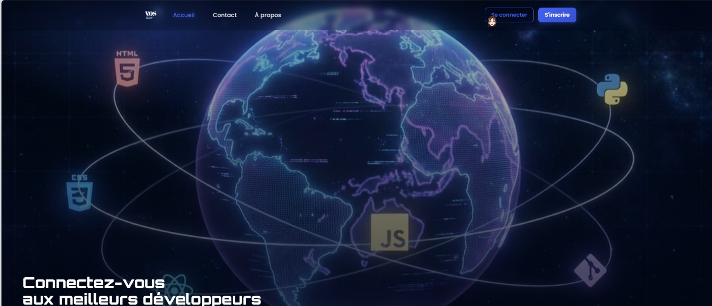

VOS - Plateforme RH intégrée
Gestion du recrutement, des candidatures et des employés en Web et Desktop
VOS est un projet intégré proposant deux applications complémentaires pour centraliser les processus de ressources humaines : une application Web pour la gestion des utilisateurs, des offres et des candidatures, et une application Desktop dédiée au recrutement, aux entretiens, à l'évaluation et au suivi des employés.
Fonctionnalités principales
- Gestion des utilisateurs et des rôles
- Création et gestion des offres d'emploi
- Suivi des candidatures et du processus de recrutement
- Gestion et évaluation des entretiens
- Suivi des employés et des ressources humaines
- Reconnaissance faciale et fonctionnalités d'IA générative
Technologies utilisées
- Symfony pour l'application Web
- JavaFX pour l'application Desktop
- IA générative pour enrichir les processus RH
- Reconnaissance faciale
- Architecture intégrée pour les données et les processus RH
